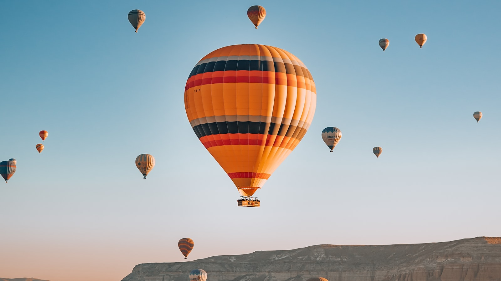
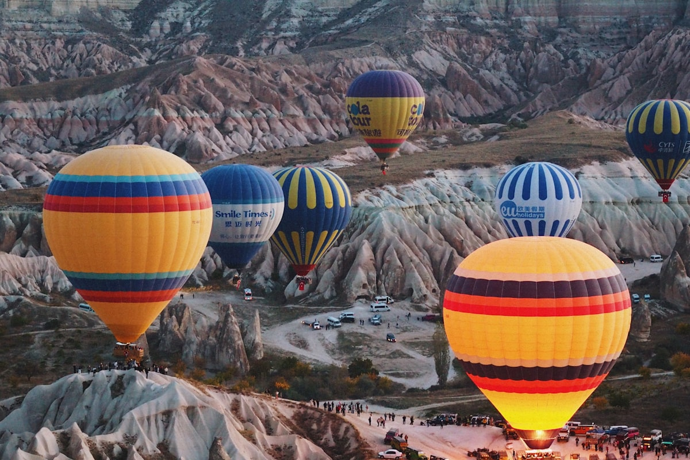

Cappadocia is the dreamlike region of fairy chimneys, cave hotels and sunrise hot air balloons in central Turkey. There is no separate "Cappadocia visa": you enter on Turkey's national rules. In 2026 most tourists : including citizens of the United States, the United Kingdom, the EU, Canada and Australia : travel visa-free, while a defined list of other nationalities need a Turkey e-Visa obtained online before departure. This guide covers exactly what you need to reach Göreme, ride a balloon and explore the valleys.
| Key Facts 2026 | |
|---|---|
| Cappadocia is in | Turkey : Nevşehir Province, central Anatolia |
| Visa-free 90/180 | US, UK, EU/Schengen, Canada, Australia, Japan, South Korea, Singapore & 70+ others |
| Turkey e-Visa | Required for ~50 nationalities (e.g. India); from about USD 43-50 at evisa.gov.tr |
| Main airports | Kayseri (ASR) and Nevşehir Kapadokya (NAV) : both ~1 hour from Göreme |
| Passport validity | 6 months recommended (Turkey's formal minimum is 60 days beyond your stay) |
| Hot air balloon | No extra visa or permit; flights ~€80-300 depending on season |
| Currency | Turkish lira (TRY) : cards widely accepted, cash useful for tours |
| Official visa portal | evisa.gov.tr |
There Is No "Cappadocia Visa" : You Enter on Turkey's Rules
Cappadocia is a region of Nevşehir Province in central Anatolia, not a separate country or special zone. Whatever entry permission lets you into Turkey lets you into Göreme, Üçhisar, Ürgüp, Avanos and every Cappadocia town. There is no regional permit, no internal checkpoint between Istanbul and Cappadocia, and no extra paperwork for the area's UNESCO-listed valleys. Your right to enter is decided once, at your first international point of arrival : usually Istanbul.
Visa-Free Entry for Cappadocia (Most Tourists)
The large majority of visitors enter Turkey visa-free for up to 90 days within any 180-day period. This includes citizens of:
- All 27 EU member states, plus Switzerland, Norway, Iceland and Liechtenstein
- The United States and the United Kingdom : the e-Visa is no longer required
- Canada and Australia (Australia became visa-free on 17 April 2026)
- Japan, South Korea, Singapore, New Zealand, Brazil, Argentina and many others
The 90/180 allowance is a rolling window: border officers count backwards 180 days from any day of your stay, so you cannot reset it with a quick "visa run". Russian citizens enter under a separate bilateral agreement allowing stays of up to 60 days. Because lists change, always confirm your own nationality on the official portal before booking flights.
Turkey e-Visa for Cappadocia 2026 (Selected Nationalities)
If your nationality is not visa-exempt, Turkey offers a fast electronic visa (e-Visa) for roughly 50 nationalities, including India. Apply only at the official site evisa.gov.tr : approval is usually issued within minutes by email. Key points for 2026:
- Cost: around USD 50, depending on nationality : Indian passport holders, for example, pay about USD 43.
- Validity: typically a single entry, valid for a stay of up to 30 days, to be used within 180 days of issue.
- Conditions: some nationalities (including India) qualify only if they also hold a valid Schengen, US, UK or Ireland visa or residence permit.
- Carry it with you: keep a printout or PDF on your phone : there is no visa-on-arrival, so you must hold the e-Visa before boarding.
Nationalities that are not eligible for the e-Visa must apply for a sticker visa at a Turkish embassy or consulate before travelling.
Best Time to Visit & When the Balloons Fly
Cappadocia is a year-round destination, but the experience shifts with the season. Hot air balloons launch at sunrise almost every day, weather permitting, so plan your trip around reliable flying conditions:
- April-June & September-October: the sweet spot : mild days, high balloon-flight reliability and green or golden valleys.
- July-August: hot and busy, but sunrise flights remain excellent.
- November-March: cold with occasional snow (spectacular over the fairy chimneys), lower prices and more frequent weather cancellations.

Hot Air Balloon Rides : Permits, Costs & Safety
The sunrise balloon flight is the reason many travellers come to Cappadocia. The good news: tourists need no special visa or permit : just a booking. Operators are licensed and supervised by Turkey's Directorate General of Civil Aviation (SHGM), and every passenger is insured through the operator.
- Price 2026: roughly €80-150 in the low season (November-April) and €150-300 in the high season (April-November); deluxe or small-basket flights cost more.
- What's included: hotel pick-up and drop-off, an approximately one-hour flight, a safety briefing, a licensed pilot, a landing celebration and a flight certificate.
- Booking: reserve a few days ahead in peak season; you can pay the operator directly or through a tour platform.
- Cancellations: flights depend on the weather and may be cancelled for safety : reputable operators refund or rebook.
How to Reach Cappadocia
Most travellers fly into Istanbul (IST or SAW) and connect by a short domestic flight to one of the region's two airports:
- Kayseri (ASR): about 75 minutes from Göreme and the most frequent flight option.
- Nevşehir Kapadokya (NAV): about 45-60 minutes from Göreme : closer, but with fewer flights.
Shuttles, hotel transfers and taxis link both airports to Göreme, Ürgüp and Uçhisar. Overnight coaches also run from Istanbul, Ankara and Izmir. Your entry stamp or e-Visa is checked at your first international point of entry (usually Istanbul), not at the regional airport.
Getting Around & Where to Stay
Göreme is the most popular base : walkable, ringed by the Open-Air Museum and valley trails, and full of cave hotels. Üçhisar offers panoramic views and quieter boutique stays; Ürgüp is larger, with wineries and restaurants; Avanos is known for pottery on the Kızılırmak river. Explore on foot through Love, Rose and Pigeon valleys, by rental car or scooter, or on the classic "Red" and "Green" group tours. Many visitors splurge on a cave hotel for at least one night : carved into the soft tufa rock, they are a Cappadocia experience in themselves.
Documents for Cappadocia & Balloon Rides
- Passport valid 6+ months beyond your stay, with a blank page for the stamp
- Turkey e-Visa printed or on your phone : only if your nationality requires one
- Onward or return ticket out of Turkey
- Hotel booking in Göreme, Ürgüp, Uçhisar or Avanos
- Sufficient funds for your stay (cards are widely accepted; carry some lira)
- For a balloon ride: just your activity booking and the waiver signed at the operator : no extra visa
- Travel insurance recommended (balloon flights are an adventure activity)
Money, Currency & Costs
The currency is the Turkish lira (TRY). Cards (Visa and Mastercard) are accepted at hotels, restaurants and most shops, and ATMs are available in Göreme, Ürgüp and Nevşehir. Keep some cash for local tours, tips, village shops and balloon-operator balances. Big-ticket items : balloon flights, tours and cave hotels : are often quoted in euros or US dollars but can usually be paid by card.
Frequently Asked Questions
Do I need a visa to visit Cappadocia in 2026?
There is no separate Cappadocia visa : you enter on Turkey's national rules. Most tourists, including citizens of the US, UK, EU/Schengen states, Canada and Australia, enter visa-free for up to 90 days within 180 days. Other nationalities (for example India) need a Turkey e-Visa obtained online at evisa.gov.tr before departure.
Do US, UK or EU citizens need a visa for Cappadocia?
No. As of 2026, citizens of the United States, United Kingdom and all EU/Schengen states enter Turkey visa-free for up to 90 days within any 180-day period. The previous e-Visa requirement for US and UK passport holders has been removed.
Is there a special permit for hot air balloon rides in Cappadocia?
No. Tourists need no extra visa or permit to take a balloon flight : only a booking. Operators are licensed and supervised by Turkey's Directorate General of Civil Aviation (SHGM), and every passenger is insured through the operator.
How much does a Cappadocia hot air balloon ride cost in 2026?
Roughly €80-150 in the low season (November-April) and €150-300 in the high season (April-November); deluxe small-basket flights cost more. The price typically includes hotel pick-up and drop-off, an approximately one-hour flight, a safety briefing, a licensed pilot and a flight certificate.
Which airport is closest to Cappadocia?
Nevşehir Kapadokya (NAV) is the closest, about 45-60 minutes from Göreme, while Kayseri (ASR) is around 75 minutes but offers more frequent flights. Both connect by short domestic flights to Istanbul (IST or SAW).
How long can I stay in Turkey for tourism?
Visa-free nationals can stay up to 90 days within any rolling 180-day period. E-Visa holders are typically limited to a single entry of up to 30 days. Border officers count backwards 180 days from any day of your stay, so you cannot reset the limit with a quick exit and re-entry.
How do I apply for a Turkey e-Visa and how much is it?
Apply online at the official portal evisa.gov.tr; approval usually arrives by email within minutes. The fee is around USD 50, depending on nationality (Indian passport holders pay about USD 43). Some nationalities, including India, qualify only if they also hold a valid Schengen, US, UK or Ireland visa or residence permit.
What is the best time to visit Cappadocia?
April-June and September-October offer mild weather and the most reliable sunrise balloon flights. Summer is hot and busy but flights remain excellent, while winter brings snow over the fairy chimneys and lower prices but more weather-related cancellations.